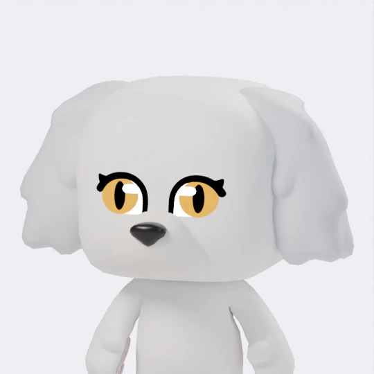
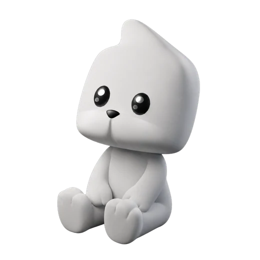
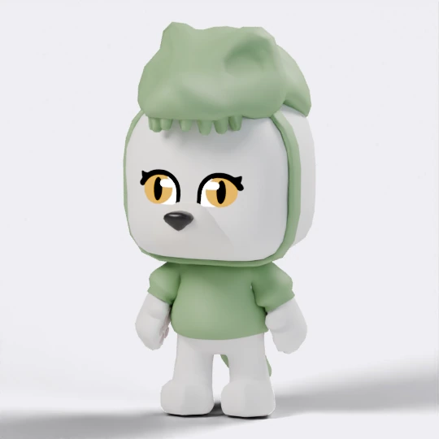
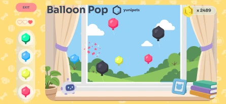
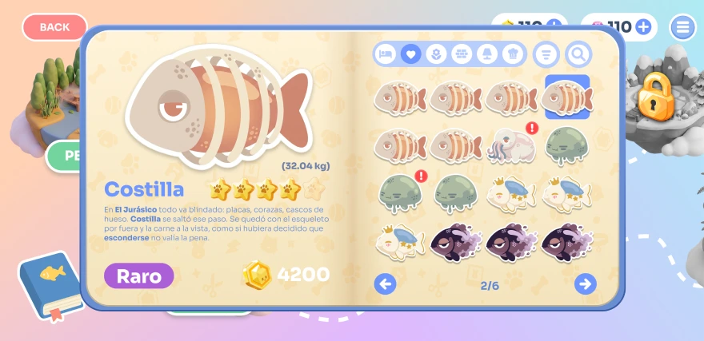
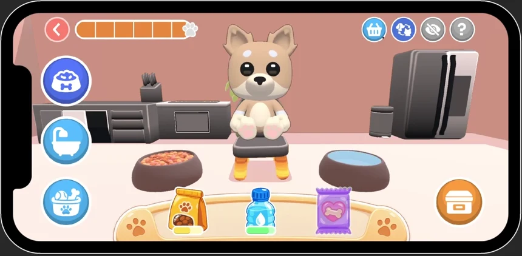
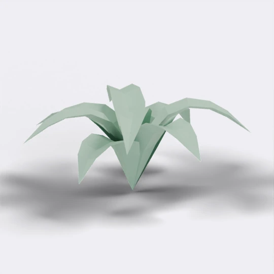

Personaje y animación
Una mascota que se puede armar y mover
El cuerpo y la cabeza pasaron de pruebas de forma a un esqueleto que admite piezas intercambiables. En junio ya había acciones para sentarse, dormir e interactuar con muebles.

El ecosistema Yunipets
La idea de Yunipets es que una familia pueda reconocer a su mascota en un compañero digital. La forma de las orejas, las manchas del pelaje y la manera de sentarse son parte de esa identidad.
De febrero a octubre, el equipo trabajó en las piezas que hacen visible ese vínculo dentro del juego. Los reportes muestran cómo se arma el personaje, cómo se mueve y qué puede hacer en su cuarto, en la tienda y en las islas de pesca.
Ver los avances por sistema
El punto de partida

Personaje y animación
El cuerpo y la cabeza pasaron de pruebas de forma a un esqueleto que admite piezas intercambiables. En junio ya había acciones para sentarse, dormir e interactuar con muebles.


Habitaciones
Mayo aportó unos 60 muebles básicos y junio añadió otros 60. Los puntos de apoyo permiten colocar objetos encima de otros. En octubre, la mayoría de las piezas básicas ya tenía seis acabados.


Vestuario
Seis conjuntos principales y dos extra recibieron geometría, coordenadas de textura y pesos para seguir el movimiento del personaje. El registro de septiembre dejó como siguiente paso texturizarlos y probarlos en Unity.


Tienda y arcade
El equipo exploró cuatro distribuciones, desarrolló dos tiendas y llevó la tienda ortográfica a Unity. Globos y escalada ya tenían pantallas para la demo. El registro de julio aún dejaba pendientes los personajes finales de la tienda.


Pesca
El álbum reunió ilustración, nombre y ficha por especie. La propuesta de mapa distingue las islas disponibles de las bloqueadas. La lista final de peces por isla quedó para validación con desarrollo.


Cuidado y exploración
PetCare reunió comida, baño y juego en una propuesta de interfaz. Captura de PetCare · Arte no final. Las primeras plantas sirvieron para estudiar el entorno. El tablero de exploración y los consumibles aparecen en la planeación posterior a octubre.